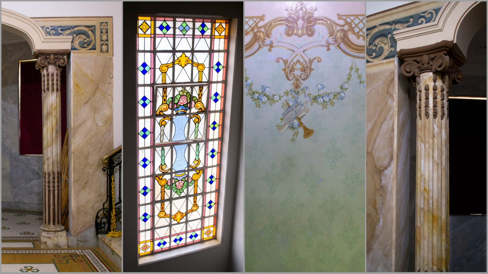
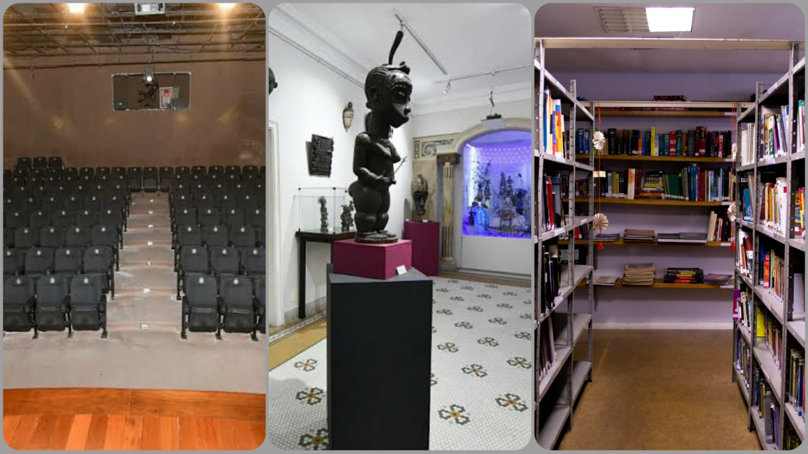

Complexo Cultural de Nova Iguaçu
Apresentação
A construção do nosso Complexo Cultural de nova Iguaçu data o período de ouro da laranja
A casa pertencia a família Di Gregório de ascendência italiana, era uma família tradicional de citricultores da década de 1930.
A construção é mercada por materiais importados da Itália, como os vitrais coloridos das escadas e banheiro. Além disso, há pinturas nas paredes que datam da sua construção, feitas a mão e todo acabamento em cerâmicas de seu país natal.
Antes de ser Casa de Cultura já foi fórum e escola porém foi desapropriada pela prefeitura para se tornar um centro cultural, que nos dias atuais conta com várias instalações, incluindo um teatro, salas de exposições, biblioteca e espaços para oficinas e atividades educativas.
O casarão ficou conhecido primeiro como Casa de Cultura Ney Alberto, em homenagem a um grande historiador Iguaçuano que trabalhou por vários anos ajudando alunos a dissertarem trabalhos de faculdade na sala onde se encontrava,mas logo após o nome mudou em homenagem a Sylvio Monteiro: ator, compositor, teatrólogo, animador cultural e grande defensor da arte popular na Baixada Fluminense.